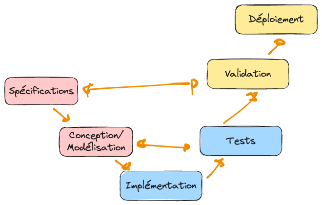
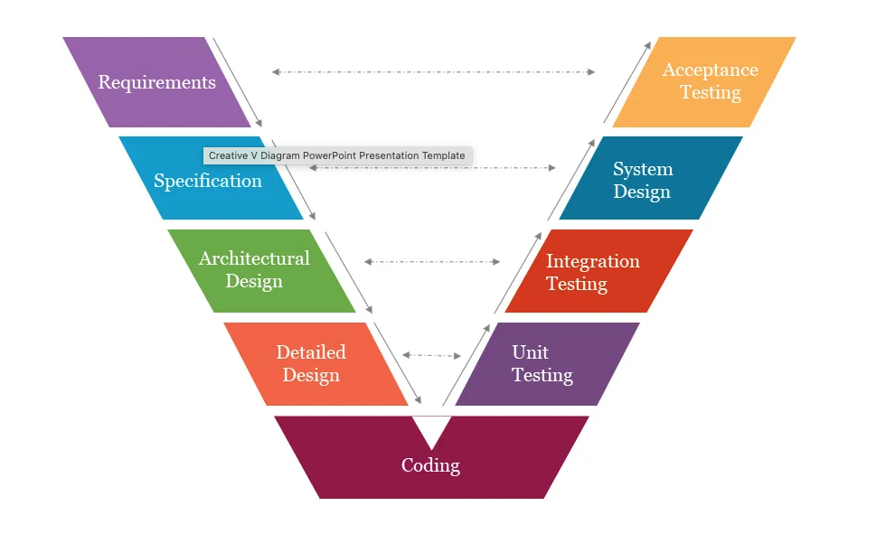
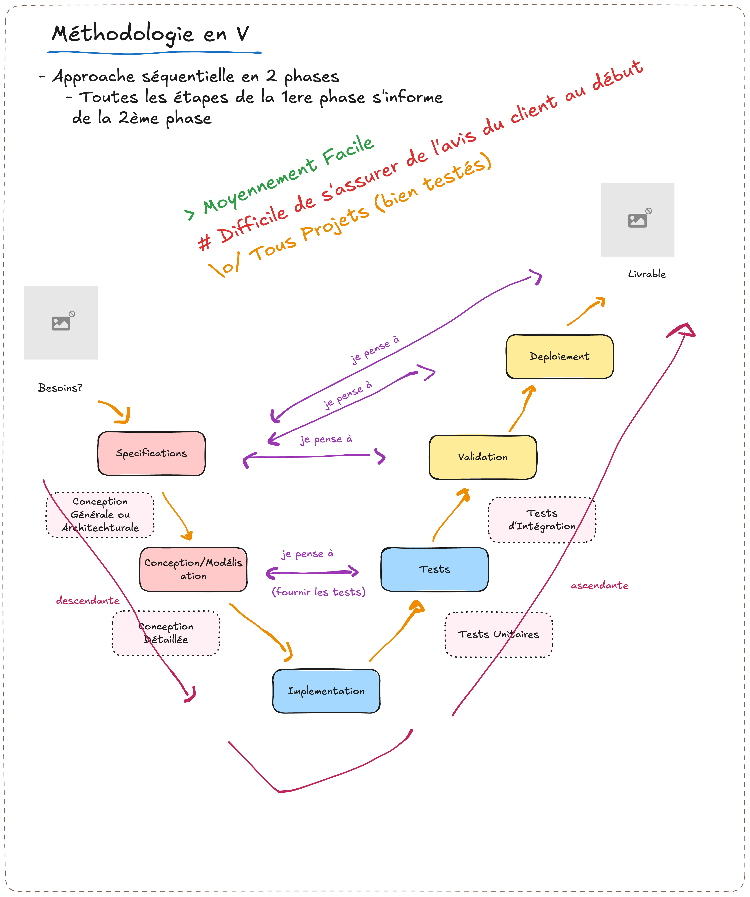

Chapitre 5 : Le modèle en V
Le modèle en V se lit en deux parties, comme son nom l’indique : une phase descendante (jusqu’à l’implémentation) et une phase ascendante (jusqu’au déploiement). Il vient corriger le gros défaut de la cascade : ne pas savoir anticiper la validation.
Avantages, limites et usages
Avantages |
Limites / Défis |
Bon pour |
|---|---|---|
On a l’avis du client en début de développement ; très efficace pour éviter les bugs |
Encore risqué : on peut développer un outil qui ne correspond plus au besoin |
Tout projet (le modèle le plus utilisé), notamment de taille moyenne |
Moyennement facile à mettre en œuvre |
Défi : réunir tous les éléments de décision avec le client au moment de la spécification |
Quand on veut un logiciel bien testé ; specs claires et livraisons critiques (e-commerce, embarqué temps réel) |
Exercice
Pour le préliminaire, listez trois tests de validation que vous écririez dès la phase de spécification, avant tout code.
Comment ça marche ?
À chaque phase descendante correspond une phase ascendante de test/validation préparée dès le départ :
Descendante
Détail
Lien
Ascendante
Spécification
Identifier les spécifications (fonctionnelles et non fonctionnelles)
Comment valider l’outil avec le client
Validation (exécution)
Conception / modélisation
Conception générale, puis détaillée
Quels tests dois-je faire ? Élaborer les tests et protocoles ⇒ écrire le test
Tests (exécution)
Implémentation
Écrire le code

Le modèle en V : à chaque phase de conception correspond une phase de test.

Les niveaux de test sont planifiés dès la phase descendante.

Le « V » : à chaque niveau de conception correspond un niveau de test.